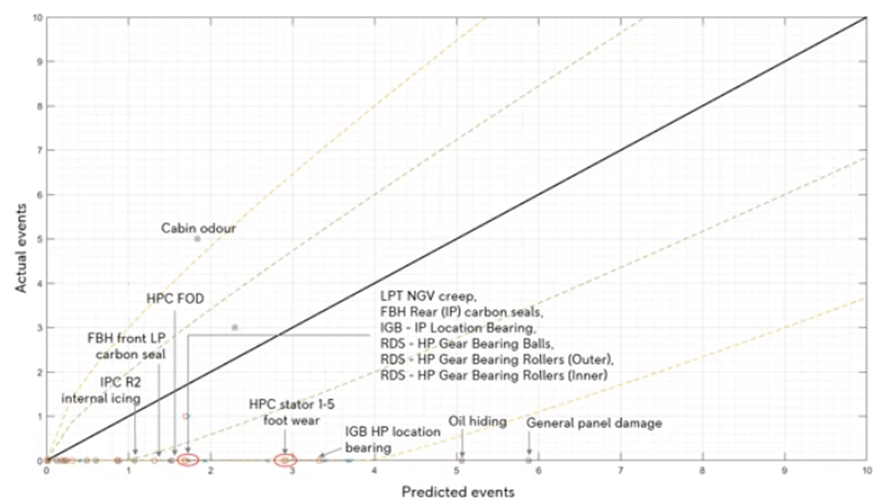
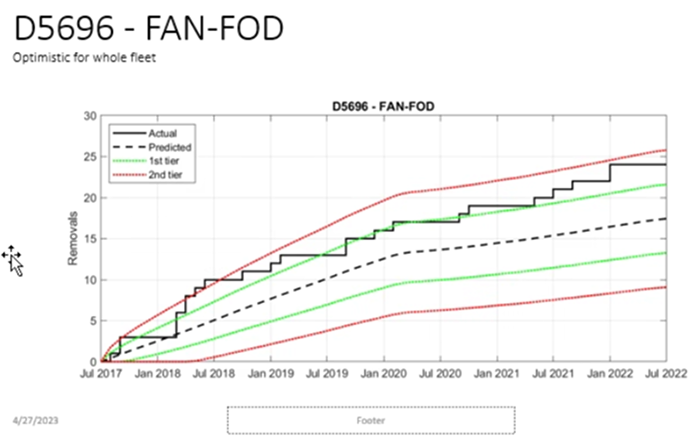
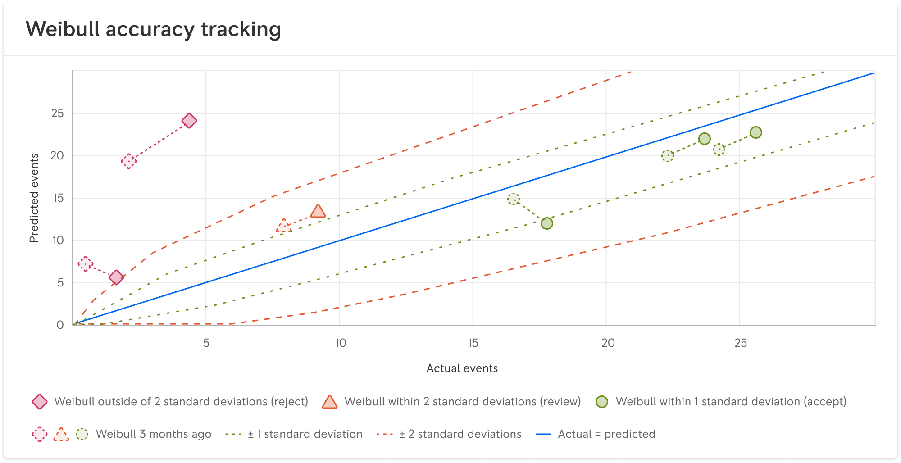

Case study · 04 · Aviation
The key feature came from watching, not asking.
The brief was thin: there's a project, here's a name, call him. No PO, no discovery plan, no formal scope. What followed was a series of informal calls with one very talkative engineer — and one moment of watching his screen that shaped the entire solution.
Role
Sole Product Designer
Client
Aviation industry (via Accenture) · Desktop
Tools
Figma · FigJam · Miro · Jira
Methods
Self-directed expert interviews · Remote observation · Workflow mapping · Wireframing · Usability testing · Handoff
The situation
Aircraft engines are taken out of service based on predictive mathematical models. If a model flags a problem too early — the engine lands in the hangar before it needs to. An expensive mistake.
The engineers responsible for monitoring these models did it manually, in Excel, roughly twice a year. Between those reviews: silence. No continuous visibility, no alerts, complete dependency on a handful of people who knew how the process worked.
The goal was to replace that process with an application giving engineers automated, continuous insight into model health.
My role
I was the sole Product Designer on the project. I ran the full process — discovery, wireframes, high-fidelity mockups, usability testing, and developer handoff. I worked alongside a Design System Specialist and front-end and back-end development teams.
There was no Product Owner actively involved in this project. The brief was a name and a project title. Everything else I built myself.
Process
Starting with almost nothing
The way this project started was simple: someone gave me a name and said call him. So I did.
The engineer I was connected with was open, generous with his time, and deeply knowledgeable. He was also the kind of person who could talk for ninety minutes when you'd scheduled thirty. Every call surfaced something useful — and something tangential. My job, across every session, was to keep the conversation moving toward what I actually needed to understand: how he worked, what he needed at each step, and what would still matter once the manual Excel process was gone.
I called him as many times as it took. When I had wireframes, I showed him those too — not as presentations but as the same kind of research instrument I use in every complex domain project. Show something concrete, get a reaction you couldn't get from a question alone.
Mapping the existing workflow step by step — what the engineer needed to do, what data he consulted at each stage, and what he was doing manually because no tool existed. The mapping came first. The design questions came from the mapping.

The target workflow — built around what engineers actually needed, not the manual workarounds they'd been using. Each phase was defined before a single screen was designed.
The moment that changed the design
During one of those calls, I asked him to show me how he actually worked. He shared his screen and walked me through his Excel file.
That's when I saw the chart.
He'd built a chart based on Weibull distribution himself — a way to visually assess whether a model was behaving correctly. He used it intuitively, as a sanity check, before making any decisions about a model. He hadn't mentioned it in any of our previous conversations. It only surfaced because I was watching him work, not just listening to him talk.
That observation changed the entire solution. The chart went into the application as the primary mechanism for model assessment — not as a visual embellishment, but as the core tool engineers would use to evaluate model health. They got something built around a mental model they already had, instead of having to learn something new from scratch.


The charts the engineer had built himself — Weibull distributions used to visually assess whether models were behaving correctly. He never mentioned them in conversation. They only appeared because I was watching him work. These charts became the foundation of the application's assessment view.
What the wireframes taught me
Each round of wireframes went back to the same engineer. His reactions — what he understood immediately, what confused him, what he said "yes, but..." to — told me things no interview question would have surfaced. That back-and-forth continued until the design felt like something he already knew how to use, not something he'd have to learn.
The solution
The application shipped as two connected views. The main page gives engineers an overview of all Weibull models — their status, accuracy, and recommended action. The detail view shows the full picture for a single model: the Weibull accuracy chart, event history, and root causes.
The main view — all Weibull models for a given engine type, with status (over-predicted, under-predicted, on target), recommended action (reject, review, accept), and the accuracy tracking chart showing each model's position relative to predicted and actual events. A process that previously happened twice a year in Excel now updates continuously.
The detail view for a single Weibull model — showing the accuracy chart built around the engineer's own Excel chart, the full event history with root causes, and export options for further analysis. The chart the engineer had built for himself became the primary mechanism for assessment across the whole team.
Usability testing
I tested with five participants who hadn't been involved in the earlier sessions. The application scored 72.5 on the System Usability Scale — landing in the "Good" range. The foundation was solid. Testing also surfaced two specific problems worth describing.
The accordion problem
The model name — a clickable link to the detail view — sat directly next to the accordion arrow. Both were blue. Users assumed they did the same thing — expanding the row — and couldn't find their way into the detail view at all. The fix: remove the accordion, replace it with an (i) icon at the end of the row. Model name leads to details. Icon leads to summary. Two distinct actions, two visually distinct elements.
Before: model name and accordion arrow sitting side by side, both blue, both looking like they did the same thing. After: accordion removed, summary information moved behind an (i) icon. Two actions, two elements — unambiguous.
The trend line problem
The model trend was displayed as a line described in a legend. Users didn't understand what it meant in practice — the legend wasn't enough context. I prepared two alternative approaches and documented them as recommendations for the next development phase.


Two alternative approaches to showing model trend — prepared as post-testing recommendations. Version 1 uses connected data points with visible previous positions. Version 2 uses dashed outlines to show where each model was three months prior. Both make the trend legible without requiring the user to decode a legend.
Outcome
The project delivered as an MVP — a working application with a SUS of 72.5 and a documented set of recommendations for the next phase. The foundation was solid. Further development didn't move forward during my time at the company, but the recommendations were left in a state the next team could pick up directly.
What stayed with me from this project was something simpler than any deliverable: the engineer had everything I needed to know. He just didn't know what was relevant to me. No amount of careful questioning would have surfaced the Weibull chart — it was too embedded in how he worked to describe. The only way to find it was to be in the room, watching.
In domains like this, observation isn't a research method among others. It's the one that finds what everything else misses.